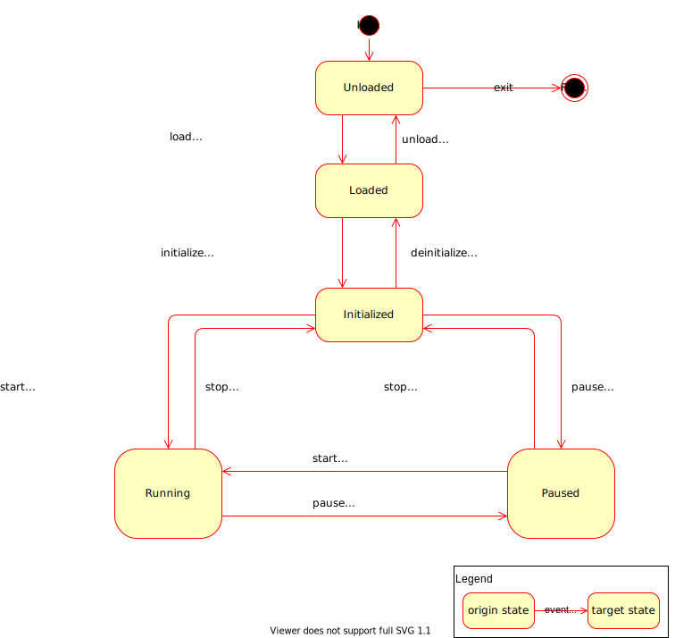

Participant
Creation
A participant instance has to be created using the function fep3::arya::createParticipant() or any of its overloads.
There are various convenience wrappers of this function with the same name in other namespaces:
These convenience wrappers serve common use cases and require less arguments to be passed. For stand-alone participant executables it is recommended to use those overloads that take ‘argc’ and ‘argv’ as arguments in order to enable command line argument parsing, so that parameters like participant or system name can be changed on startup and are not hard-coded into the participant.
createParticipant convenience wrappers of the CPP Library
These convenience wrappers are for simple participants where the entire implementation can be described with a fep3::cpp::arya::DataJob and no custom element is required.
// Recommended variation with command line argument parsing
Participant part = fep3::cpp::createParticipant<fep3::cpp::DataJobElement<MyDataJob>>(argc, argv, "MyParticipant", "MySystem");
// Most simple variations with hard-coded participant and system name
fep3::cpp::createParticipant<fep3::cpp::DataJobElement<MyDataJob>>("MyParticipant");
fep3::cpp::createParticipant<fep3::cpp::DataJobElement<MyDataJob>>("MyParticipant", "MySystem");
To add user defined command line arguments a parser object has to be created and passed to the createParticipant function.
// Variable to which the command line argument gets copied to. Set the default value here.
std::string project = "fep";
// Add the user defined argument to a clara::Parser object. Make sure to not overwrite any options already defined by the SDK.
clara::Parser parser;
parser |= clara::Opt(project, "string")
["-p"]["--project"]
("Set the project the participant is part of");
// Create a CommandLineParser object with the factory function. This will add the natively supported command line options to the parser.
std::unique_ptr<CommandLineParser> clp = fep3::CommandLineParserFactory::create(parser, ParserDefaultValues{"MyParticipant", "MySystem", ""});
// Pass the CommandLineParser object to the createParticipant function
Participant part = fep3::cpp::createParticipant<fep3::cpp::DataJobElement<MyDataJob>>(argc, argv, std::move(clp));
// Alternatively call the factory function inline. The last value of the ParserDefaultValues (server address url) can be omitted
// but not all compilers support partially defined initializer lists.
fep3::cpp::createParticipant<fep3::cpp::DataJobElement<MyDataJob>>(argc, argv, CommandLineParserFactory::create(parser, {"MyParticipant", "MySystem", ""}));
createParticipant convenience wrappers of the Core Library
These convenience wrappers are for participants with custom elements and also allow to define the element version and a default value for the system address URL.
// Recommended variation with command line argument parsing
Participant part = fep3::core::createParticipant<fep3::core::ElementFactory<MyElement>>(argc, argv, "1.2.3", {"MyParticipant", "MySystem", ""});
// If the participant and system name shall always be passed as command line arguments, the ParserDefaultValues can also be omitted.
fep3::core::createParticipant<fep3::core::ElementFactory<MyElement>>(argc, argv, "1.2.3");
This will make the optional arguments required and changes how the executable is called:
With default values defined:
> myParticipantExecutable -n MyParticipant -s MySystem
Without default values defined:
> myParticipantExecutable MyParticipant MySystem
If command line parsing is not required, possible or sensible then this overload without ‘argc/argv’ can be used:
fep3::core::createParticipant<fep3::core::ElementFactory<MyElement>>("MyParticipant", "1.2.3", "MySystem");
Adding user defined command line arguments is identical to the CPP library. Only the fep3::arya::createParticipant() call is slightly different.
fep3::core::createParticipant<fep3::core::ElementFactory<MyElement>>(argc, argv, "1.2.3", CommandLineParserFactory::create(parser, {"MyParticipant", "MySystem", ""}));
Execution
After instantiating the participant, it has to be executed via fep3::arya::Participant::exec(). If the execution succeeds,
this method blocks until the State Machine reaches the state Final.
State Machine
A participant instance has the following state machine:
Attention
State ‘Paused’ is not supported yet. Trying to set a participant and its components to state ‘Paused’ results in an error.
Once the participant instance has been created, its state machine is in state ‘Unloaded’. The state machine can then be controlled by events via the Service Bus.
The following table shows the calls to the FEP Participant API as performed by the element-related guards and actions (postfixed by ..._element in the state machine diagram):
guard/action |
calls on the FEP Participant API |
|---|---|
load_element |
|
unload_element |
|
initialize_element |
|
deinitialize_element |
|
run_element |
|
stop_element |
|
Note: For a description of the calls to the FEP Component API as performed by the component-related guards and actions (postfixed by ..._components in the state machine diagram),
please refer to Calls to the fep3::arya::IComponent interface.
Element Interface
The element interface describes the structure of an element. The participant is able to load and manage a FEP Element implementation via an Element Factory. This interface is described as follows: